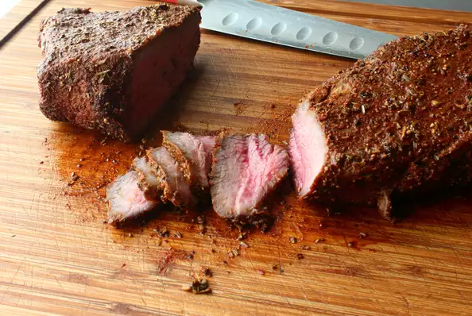

The Best Beef Tri-Tip

Description
This tri-tip recipe came about after I received a food wish for roast beef, which can be done with many different cuts. I ended up deciding on beef tri-tip since it's affordable, flavorful, great for parties, and, using this low-temp roasting technique, nearly fool-proof. No marinating, no searing, no nothing; just rub on some salt and spices and pop it into the oven until it reaches the doneness you want. Plate it up with a Romano bean salad or enjoy as a roast beef sandwich!
Ingredients
- 2 tablespoons kosher salt
- 1 tablespoon freshly ground black pepper
- 1 tablespoon smoked paprika
- 1 teaspoon garlic powder
- ¼ teaspoon cayenne pepper
- 1 teaspoon dried rosemary
- 1 tablespoon chopped fresh rosemary leaves
- 1 (2 1/2 pound) beef tri-tip roast
- ½ cup beef broth (Optional)
Steps
- Preheat the oven to 225 degrees F (110 degrees C).
- Mix salt, pepper, paprika, garlic powder, cayenne, dried rosemary, and fresh rosemary together in a small bowl.
- Place tri-tip in a baking pan. Season generously with the spice rub until both sides are completely covered.
- Bake in the preheated oven until an instant-read thermometer inserted into the thickest part reads 130 degrees F (54 degrees C) for medium-rare, or until desired doneness, 1 1/2 to 2 hours. Flip meat over halfway.
- Cover pan with aluminum foil and let meat rest for 20 minutes. Remove tri-tip to a cutting board and cut into 2 pieces along where the grain changes direction. Slice meat across the grain and transfer to serving plates.
- Mix beef broth in with the pan drippings and drizzle over the slices.